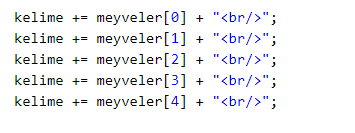
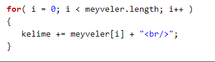
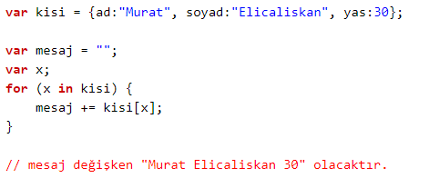
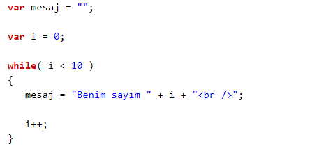
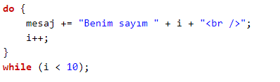
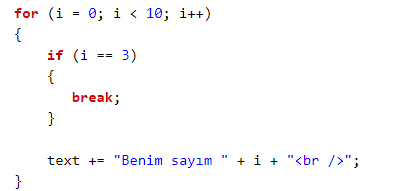
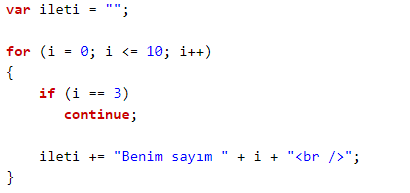

DÖNGÜLER
Döngüler aynı kodu farklı değişkenlerle döndürmemizi sağlar. FOR ve WHILE, JavaScript'te sıklıkla kullanılan iki döngü komutudur.
Varsayalım 5 elemanlı meyveler adında bir dizemiz var. Döngü kullanmadan bunları yazdırmak için uzunca aşağıdaki kodu yazmamız gerekirdi;
Örnek

Fakat FOR döngüsü kullansaydık işte bu kadar kısa olacaktı:

O halde böyle kullanışlı bir şeyi kodlarınızda kullanmak için öğrenmeye hazır olun.
FOR Döngüsü
Kullanırken noktalı virgülle ayrılmış üç bilgi girmemiz gerekir;for ( ifade 1; ifade 2; ifade 3 )
ifade 1: Döngü öncesi uygulanacak kodlar
ifade 2: Döngünün hangi şartlarda devam edeceği
ifade 3: Döngü içindeki kodların uygulanması her tamamlandığında çalıştırılacak kodlar
Örneğin şu ifadeyi yorumlayalım:
for (i = 0; i < 5; i++ )
Burada i = 0, i adlı bir değişken yaratıp 0 değerini verdiğimizi belirtiyor. i < 5, i, 5'ten küçükse döngü devam eder. Ne zaman ki eşit ya da büyük olursa döngü sona erer. Sondaki i++ ise döngü içindeki kodlar her çalıştırıldıktan sonra i değişkeninin değerini 1 arttırmasını ister. Sonuçta döngü i = 0 ile başlayıp her seferde artarak i = 4 olduğunda son kez çalıştırılıp bitecektir. Toplamda 5 kez kodlar çalıştırılır.
FOR/IN Döngüsü
Nesnelerin barındırdığı verileri yazdırmayı sağlar. Örneği inceleyin;Örnek

WHILE Döngüsü
while( koşul ) { kodlar } şeklinde kullanımı olan bu döngü koşul sağlandığı sürece tekrar edecektir. Örneğe bakalım;Örnek

Koşul i'nin 10'dan küçük olması. WHILE'ın çalıştırdığı kodlara bakarsanız i++ yani i'nin bir arttırılması istenmiş. Bu sayede i = 0, i = 1 ... i = 9 olur ancak i = 10 olmaz. Çünkü koşul i'nin 10'dan küçük olması şartını koymuş.
DO/WHILE Döngüsü
WHILE koduna benzer şekilde çalışır. Fakat bu kez koşulun kontrol edildiği yer döngünün başında değil sonundadır.Örnek

Döngüyü Sonlandırmak (break)
JavaScript'te çalışmakta olan bir döngü break komutuyla durdurulabilir. Aşağıdaki örnekte 10'dan küçükse çalıştır anlamı içerse de i = 3 olduğunda döngü sonlandırılacaktır. Çünkü break kodu kullanıldı.Örnek

Sonraki Tekrara Geçmek (continue)
Döngü tekrarlardan oluşur. Bazı tekrarları hızlı geçmek ve sonraki tekrardan devam etmek isteyebilirsiniz. Bu durum için kullanacağınız kod continue.Örnek

Yukarıdaki kod çalıştırıldığında "Benim sayım 3" ifadesinin atlandığını göreceksiniz.
IF, ELSE IF, ELSE, FOR, WHILEgibi kod blokları içeren komutlar kullanırken eğer yazacağımız kod tek satırsa kıvrımlı parantez {} kullanmadan alt satıra kodu yazabiliriz. Örneğin;
for ( i = 0; i < 5; i++ )
mesaj += "Benim sayım " + i ;